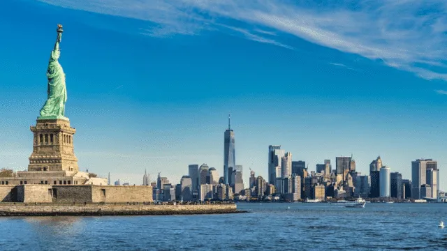

Tailandia es un país del Sudeste Asiático. Es famoso por sus playas tropicales, los opulentos palacios reales, las ruinas antiguas y los templos adornados con figuras de Buda. En Bangkok, la capital, un paisaje urbano ultramoderno se alza junto a las tranquilas comunidades a orillas de los canales y a los icónicos templos de Wat Arun, Wat Pho y el Templo del Buda de Esmeralda (Wat Phra Kaew). Entre los centros turísticos en las playas cercanas, se encuentran el desbordante Pattaya y el moderno Hua Hin.
Italia
Italia, país europeo con una larga costa mediterránea, influyó considerablemente en la cultura y la cocina occidental. Su capital, Roma, es hogar del Vaticano, de ruinas antiguas y de obras de arte emblemáticas. Otras ciudades importantes son Florencia, con obras maestras del renacimiento, como el "David" de Miguel Ángel y el Domo de Brunelleschi; Venecia, la ciudad de los canales; y Milán, la capital italiana de la moda.
Estados Unidos

Estados Unidos es un país de 50 estados que ocupa una extensa franja de América del Norte, con Alaska en el noroeste y Hawái que extiende la presencia del país en el océano Pacífico. Entre las principales ciudades de la costa del Atlántico, se encuentran Nueva York, un centro global financiero y cultural, y la capital Washington D. C. Chicago, metrópolis del medio oeste, es famosa por su influencia arquitectónica y, en la costa oeste, Hollywood, Los Ángeles, es famosa por la industria cinematográfica.